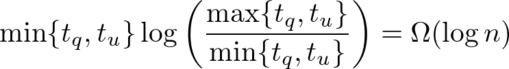

Dynamic Connectivity Algorithm
個人的メモ
グラフ $G$ の全域森を管理する. このとき $\log n$ 個の Euler Tour Tree を用いて Scaling(Layering) することで辺を削除した際の restore 操作の高速化を(ならしの意味で)可能にしている.
具体的には各辺がレベル $l(e)$ ($0 \le l(e) \le \log n$) を持っていて, 最初は全て $0$ である. レベル $i$ 以上の辺からなるグラフを $G_i$ としたとき,
EulerTourTree で $G_i$ の全域森 $F_i$ を保持する. このとき $F_i$ について次の 2 つの条件が常に成り立つ.
(i) $F_i$ 内の木(連結成分)の最大サイズは $\lfloor n / 2^i \rfloor$ 以下である.
(ii) $F_0 ⊇ F_1 ... ⊇ F_{\log n}$ を満たす.
$F_i$ に含まれない $G_i$ 内の辺 $e$ (off tree edge) については辺の端点に対応する EulerTourTree のノードに "off tree edge がある" という情報を格納して,
例えば $F_i$ 内の辺が cut され新たに連結成分が増えてしまうという場合に off tree edge の中から非連結となった頂点集合どうしを再び連結させるような辺がないかを探索する(restore 操作) ときに参照される.
このときに効率よく探索する必要があり, そのために Euler Tour Tree の各ノードに "そのノードを根とする部分木内に off tree edge があるか" などの情報を平衡二分探索木上で適切に遅延伝播させたりなどする.
平衡二分探索木上で辺をたどる操作 1 回につき "ある辺のレベルが $1$ 増える" or "処理が終了する" のどちらかが成り立つため, 全体の計算量はよく抑えられる(ポテンシャルとしては例えば $\sum_{e \in E} \log n (\log n - l(e))$ などを考えると良い).
確実に何を言っているかわからないと思うので詳しく知りたい方は元論文を参照してもらいたい.
Euler Tour Tree 上で情報を正しく伝播させる必要があるため実装は割と気をつける必要がある. 計算量は辺の追加, 削除がならし $\O (\log^2 n)$, 連結性判定が $\O (\log n)$ である.
Euler Tour Tree を平衡二分木ではなく $\O (\log n)$-分木で管理することで計算量上は $\O (\log \log n)$ factor の改善が可能になる.
restore 操作を辺の重みが小さいものから順に走査することで $F_0$ が常に最小全域森となるように保つことができる.
これから deletion-only の場合削除クエリに対してならし $\O (\log^2 n)$ の計算量で動的なグラフの最小全域森を管理できることも言える.
insertion 込みだとコストの小さい辺が入ってきたときにコストの小さい辺は削除時の探索順の関係で level の高い位置に置く必要があるが, そうするとならしが回らないので無理そうである.
しかし, うまいことやると fully dynamic の場合にも各クエリならし $\O (\log^4 n)$ の計算量で動的なグラフの最小全域森を管理することができる.
ここで実際に最小全域森を出力しようとすると最悪 $\Omega (n)$ time かかるので, 問題設定としては最新のグラフの最小全域森が以前のものと変化する場合にその差分を上記計算量で出力することができれば最小全域森を管理することができると考える.
ちなみに最小全域森の online Fully Dynamic アルゴリズムについてクエリにかかる最悪計算量は長年 $\O (\sqrt{n})$ であることが知られていて, 最近になって進展があり $\O (n^{\mathrm{o(1)}})$ の計算量で管理できるアルゴリズムが発表された(FOCS 2017).
一般グラフの動的連結性クエリに答えるデータ構造も同じ感じで最悪計算量を $\O (\sqrt{n})$ から $\O (n^{\mathrm{o(1)}})$ にしようという気運が高まっている.
連結性判定だけでなく連結成分内の頂点全体への演算も $F_0$ に対する操作で簡単に行えるので計算量は $\O (\log n)$. 連結成分内の辺全体への演算は $F_0$ において全ての level の off tree edge を保持しておくようにすればこちらも計算量 $\O (\log n)$ で行える(はず).
以下の実装では平衡二分木として splay 木を用いている. 少し高速化を行っているため restore 操作時の処理がわかりにくいと思われる(本当に変更を伝播する必要のあるときのみ伝播するみたいなことをしている).
(補足)
"Lower Bounds for Dynamic Connectivity" [Patrascu, Demaine 2004] により動的連結性の operation の lower bound が amortized でも randomized でも $\Omega(\log n)$ time となることが示された(これは update もしくは query の少なくとも一方が $\Omega(\log n)$ time の意味).
また更新時間(link, cut) とクエリに応答する時間(connected) の間に存在する trade-off 関係も示している.
具体的に update time を $t_u$, query time を $t_q$ とすると  という関係が成り立つ. また trade-off の lower bound をオーダーの意味で達成するアルゴリズムとして [Thorup 2000] や [Holm, Lichtenberg, Thorup 2001] がある.
worst input の構成などのより詳しい内容は論文もしくは Demaine 先生の講義 が参考になると思うが, 少々とっつきにくかったので暇があれば解説記事などをちゃんと書きたい. (暇があれば...)
ちなみに worst case はパスの集合で構成できるため森の動的連結性クエリの lower bound も $\Omega (\log n)$ であることが言え, Link Cut Tree や Euler Tour Tree は漸近的に最適であることが分かる.
(補足 2)
上記の Thorup のアルゴリズムはクエリを処理するのに最悪 $\Theta(n)$ の計算量がかかってしまう.
最悪計算量をよく抑えるアルゴリズムとしては各クエリについて最悪 $\widetilde{\mathrm{O}} (m^{1/2})$ 時間を保証するアルゴリズムが "Data structures for on-line updating of minimum spanning trees" [Frederickson 1984] で提案されている.
このアルゴリズムはグラフの全域木を管理しながら動的連結性クエリに答えるアルゴリズムで、少し改良することで動的最小全域森問題の最悪計算量についても同じオーダーを保証することができる.
大まかな流れは (i) 一般グラフの動的連結性問題は計算量のオーダーを悪くすることなく各頂点の次数が 3 以下であるグラフの動的連結性問題に帰着できる.
(ii) そのようなグラフの全域木にはある辺 $e$ についてその辺を削除したときにできる 2 つの木のそれぞれの頂点数がある程度同じ大きさとなるというようなもの(edge separator) が存在する.
(iii) クラスターの頂点数が $\sqrt{m}$ になるまで上記の分割を再帰的に繰り返し, 各クラスターでは対応する頂点集合上の全域森を保持する. またクラスター間にある辺も別で保持しておく
(iv) insert, delete クエリを上記の構造を保つように更新する. delete クエリの方が本質で愚直にやると少し時間がかかるが, Euler Tour Tree(元論文では Topology Tree) を用いることで非連結となった全域木を修復するような辺を効率よく見つけることが可能になり, 上記のオーダーを達成できる.
この手法は "Sparsification–A Technique for Speeding Up Dynamic Graph Algorithms" [Eppstein, Galil, Italiano, Nissenzweig 1997] で sparsification technique というものを用いて $\widetilde{O} (n^{1/2})$ に改善された.
大まかな流れは (i) 辺集合 $E (m = |E|)$ を $E_1, ..., E_K$ の $K = \lceil m / n \rceil$ 個の辺集合に分けて管理する. 各辺集合のサイズは $n$ である(最後の $E_K$ だけは $n$ 個以下).
(ii) 各辺集合からなるグラフ $G_i = (V, E_i)$ を平衡二分木の葉ノードに対応させる. いま左の子のグラフを $G_1 = (V, E_1)$, その全域森を $F_1$, 右の子のグラフを $G_2 = (V, E_2)$, その全域森を $F_2$ とする. このとき親ノードのグラフを
$G = (V, E_1 \cup E_2)$ とすると, グラフ $G$ の連結性はグラフ $F_1 \cup F_2$ の連結性に等しいことが言える. つまり任意の異なる 2 頂点について $G$ 上で連結であるかどうかは $F_1 \cup F_2$ 上で連結であるかどうかと同値であることが言える.
アルゴリズムでは各ノードでそのノードに対応するグラフの全域森を管理するのだが, 上記の議論から親ノードのグラフ($G$) の全域森は子ノードの全域森の和集合($F_1 \cup F_2$) の全域森と考えて良いことになる.
(iii) ここで各ノードについて全域森を動的に管理する部分に [Frederickson 1984] のアルゴリズムを black box 的に用いる. 各ノードについてこの black box にクエリとして与えられる辺は 2 つの子ノードの全域森 $F_1$, $F_2$ 内の辺であり, $F_1 \cup F_2$ の全域森を管理する.
いま辺数のサイズが $\O (n)$ であるので各ノードで全域森を管理するにあたって 1 回のクエリは最悪 $\widetilde{O} (n^{1/2})$ 時間で行えることに注意する.
平衡二分木は葉ノードの数が $\lceil m / n \rceil$ 個なので深さは $\log \lceil m / n \rceil$ である. 加えて全体のグラフに対する 1 回の insert, delete クエリは 1
つの葉ノードおよびその先祖にしか影響を及ぼさないこと, 変更する必要のある辺の数は insert の場合は 1 つ, delete の場合は高々 2 つであることが示せるので結局各クエリについて最悪
$\widetilde{O} (n^{1/2})$ 時間を達成することが可能になる.